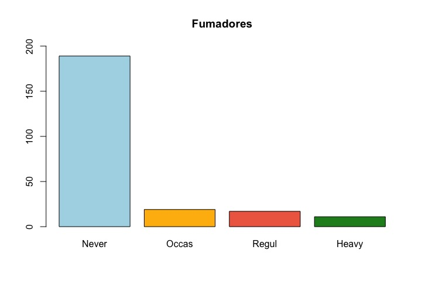
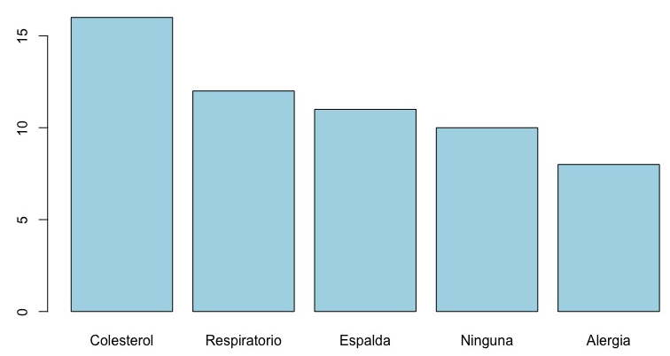
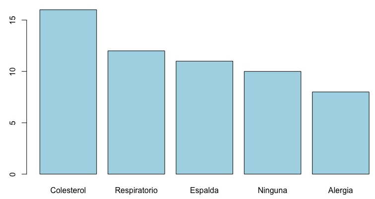
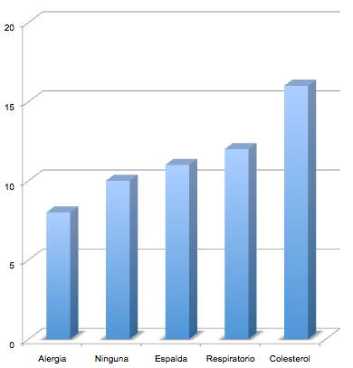

Capítulo 5 Tablas de contingencia
Una variable cualitativa es aquella cuyos valores son conceptos o términos, sobre los que no se puede operar. El ejemplo típico es el color de los ojos o el sexo. Recordemos que aunque algunas variables cualitativas pueden representarse mediante un número (por ejemplo el mes o el año), pero no puede operarse sobre ese número: 2 (febrero) + 3 (marzo) no es 5 (mayo) o el año 1914 más el 1930 no hacen el año 3844.
A los posibles valores que puede recibir un factor se les llama niveles. El sexo sólo puede tener dos niveles, que podemos llamar “hombre” y “mujer” o “masculino” y “femenino”, mientras que podemos crear una variable cualitativa con el estado civil con 4 niveles: “soltero”, “casado”, “divorciado” y “viudo”. A menudo es una decisión del que toma los datos el establecer cuántos niveles. Por ejemplo, en el caso del estado civil podríamos añadir el estado de “pareja de hecho” o dividir los casados en “casado civil” y “casado por la iglesia”. Todo depende de qué es lo que queremos estudiar.
Es muy importante, antes de empezar a tomar los datos, el determinar qué niveles puede tener nuestra variable y qué nombre tendrán. Muchas, muchas, horas se han perdido porque alguno de los tomadores de datos no ha distinguido entre “azul” y “gris” mientras otros sí lo han hecho. O porque uno ha llamado “marrón” a lo que otro ha llamado “castaño”. Igual atención se ha de prestar a exactamente cómo se va a escribir cada nivel. R, y muchos programas, distingue entre mayúsculas y minúsculas, o la existencia o no de acentos. Para R son distintos “marron”, “marrón”, “Marron” y “Marrón”.
Dado que por su propia naturaleza no puede operarse con los valores de las variables, no podemos calcular ni medias ni medianas ni desviaciones típicas. Lo único que podemos hacer es contar: cuántas personas de nuestra muestra tienen ojos azules, o son hombres, o cuántas veces se estropeó una máquina en abril. En general, podemos contar cuántos individuos de la muestra tienen un valor concreto. Los resultados se escriben en una tabla que recibe el nombre de tabla de contingencia.
El paquete MASS de R contiene muchos conjuntos de datos. El
conjunto survey es una encuesta hecha a estudiantes de
estadística de la U. de Adelaida en Australia. Uno de los datos que
contiene es si los estudiantes fuman o no. Hay 4 posible
niveles: “Heavy”, “Regul”, “Occas” y “Never” que representan a los
fumadores fuertes, regulares, ocasionales y no fumadores
respectivamente. Podemos contar cuántos hay en cada nivel y
escribirlo como una tabla. Esto es la tabla de contingencia:
No hay que contarlo a mano, naturalmente. La función table()
de R se ocupa de hacerlo por nosotros. Para obtener la tabla mostrada
he ejecutado la instrucción table(survey\$Smoke). Es muy
probable que además del número de individuos en cada categoría nos
interese el porcentaje. Basta con contar el número total de
individuos (236) y dividir. O utilizar la función
prop.table() de R. Esta función actúa sobre una tabla y no
sobre los datos “crudos”. La instrucción es
prop.table(table(survey\$Smoke)). La respuesta es
| Heavy | Regul | Occas | Never |
|---|---|---|---|
| 0.05 | 0.07 | 0.08 | 0.80 |
Y esto es todo lo que podemos hacer numéricamente sobre una variable de tipo factor.
5.1 Gráficas para datos cualitativos
Sólo hay dos gráficas habituales para una variable numérica: el diagrama de barras y el diagrama de tarta (o quesitos). Empecemos por esta segunda.
Diagrama de tarta. El diagrama de tarta no debe usarse.
Coge un papel y lápiz y dibuja dos barras, una el doble de alta que la
otra. Si el papel es cuadriculado es una tarea trivial. E incluso si
es un papel blanco, no es difícil dibujar sin regla las dos barras con
una precisión muy aceptable. Ahora dibuja un círculo y divídelo en
dos porciones, una con el doble de superficie que la otra. Sin un
transportador, un compás o alguna otra herramienta de dibujo y cierto
conocimiento de dibujo técnico es casi imposible hacerlo con un mínimo
de precisión. Y si no somos capaces de dibujar algo tan simple,
tampoco somos capaces de leerlo. Fijaos que esto lo `resuelven'' en muchas publicaciones poniendo el número al lado de cada porción. Y entonces la gente lee el número en vez de mirar la gráfica. Es decir, que la gráfica no sirve para nada. El diagrama de tarta no debe usarse. Para más información de por qué no debe usarse, mirad la ayuda de R de la funciónpie()`.
**Diagrama de barras. Un diagrama de barras es la representación simple de la tabla de contingencia: hay una barra por nivel y la altura de la barra es proporcional al valor en la tabla. Bajo cada barra está el nombre del nivel. La figura siguiente muestra el diagrama de barras de nuestra tabla de contingencia. Vemos en la figura que medimos el número de ocurrencias de cada nivel. Naturalmente también podríamos medir el porcentaje si lo quisiéramos. Lo único que cambiaría son los números que aparecen en el eje vertical.

Una cosa a tener en cuenta a la hora de hacer un diagrama de barras es el orden de los niveles. En este ejemplo, hay un cierto orden implícito: fumar mucho es más que fumar regularmente que es más que fumar ocasionalmente que es más que fumar poco. Pero si estamos considerando enfermedades, por ejemplo, no hay ningún orden lógico entre la alergia y el dolor de espalda. R, y muchos otros programas, lo que hacen es ordenarlo en orden alfabético, que es un orden muy malo, como vemos en la figura de debajo: el lector tiene dificultades en interpretar lo que ve.

Es mucho mejor de mayor a menor o de menor a mayor, como se muestra en la figura siguiente.
 

5.1.1 Gráficos 3D
Los gráficos 3D no deben hacerse nunca. Son todo apariencia: más bonitas pero mucho más difíciles de leer. Mirad la figura de debajo. Son los mismos datos que las de la figura anterior. ¿Cuánta gente hay con dolor de espalda? Intentad establecer el valor en ambas gráficas. ¿En cual es más fácil hacerlo?

Y naturalmente, nunca, nunca hay que crear un diagrama de tarta en 3D.
5.2 Conclusión
Por su propia naturaleza, son pocas las operaciones que podemos hacer sobre variables cualitativas. Numéricamente podemos contar cuántos individuos hay en cada nivel, y a lo más calcular el porcentaje. Tampoco hay muchos gráficos posibles: el único útil es el diagrama de barras.